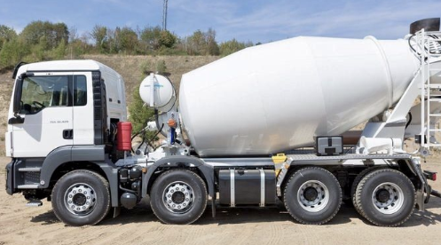

레미콘 양 자동 계산
슬래브·기초·보·기둥의 치수를 입력하면 필요 물량을 자동 산출합니다. 여유분도 직접 조정할 수 있습니다.
전화와 문자로 물어물어 찾던 재고를,
이제는 거리·물량·시간으로 한 번에 비교합니다.
INTRO
슬래브·기초·보·기둥의 치수를 입력하면 필요 물량을 자동 산출합니다. 여유분도 직접 조정할 수 있습니다.
가까운 순서로 재고, 규격, 예상 도착 시간, 가격을 비교하고 원하는 공장에 바로 요청을 보냅니다.

배차·출발·이동 중·현장 도착까지, 기다리는 시간마저 눈으로 확인할 수 있습니다.
완료 상태를 양측이 확인하고, 주문 이력과 변경 사항은 그대로 기록에 남습니다.
WHY
정확한 물량 계산과 인근 공장 재고 비교로 필요한 만큼만 주문합니다. 남는 물량도 급처 매칭으로 다른 현장에서 다시 쓰입니다.
여러 공장에 일일이 전화해 묻고 조율하던 시간을 줄입니다. 조건을 입력하고 기다리기만 하면 되는, 대화 없는 확인입니다.
물량 계산부터 매칭, 배송 확인까지 한 화면에서 끝납니다. 처음 쓰는 사람도 바로 이용할 수 있습니다.